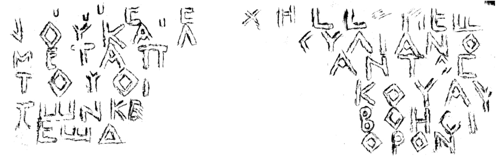

ორნამენტებიანი და ბერძნულწარწერებიანი კვარცხლბეკი კაზრეთიდანPedestal with ornaments and Greek inscription from Kazreti
ორნამენტებიანი და ბერძნულწარწერებიანი კვარცხლბეკი კაზრეთიდან
Pedestal with ornaments and Greek inscription from Kazreti
შინაარსი / Summary
საამშენებლო-სავედრებელი Building-oration
ბიბლიოგრაფია Bibliography
კრიტიკული გამოცემა Interpretive Edition
✝ ὑπὲρ ε ὐχῆς Συμεώ -
νου καὶ Ἀουλιανοῦ
μετὰ παντὸς
τοῦ οἴκου αὐ -
5τῶν. κ(ύρι)ε, βοήθ ει ι
Θεώδορον
დიპლომატიური გამოცემა Diplomatic Edition
✝ ΥΠΕΡ Ε ΥΧΗΣ ΣΥΜΕΩ
ΝΟΥΚΑΙ ΑΟΥΛΙΑΝΟΥ
ΜΕΤΑ ΠΑΝΤΟΣ
ΤΟΥ ΟΙΚΟΥ ΑΥ
5ΤΩΝ ΚΕ ΒΟΗΘ ΕΙ Ι
ΘΕΩΔΟΡΟΝ

Pedestal from Kazreti, 1964
{'default': 'ქ. სალოცველად სიმეონისა და ავლიანოსისა ყოვლითა მათითა სახლითურთ. უფალო, შეეწიე თეოდორეს. Ch. By praying for Simeon and Avlianos and their household. God, have mercy on Theolores.'}
{'default': 'პალეოგრაფიული მონაცემებით (α ჩატეხილი შუა ხაზით, π – გაგრძელებული ჰოტიზონტალური შტრიხით, კუთხოვანი ასოებით Ε, Ш) და\n ენობრივი თავისებურებებით (იტაციზმი; ο||ω–ს მონაცვლეობა; βοήθει ზმნასთან დამატება accusativus–ში) წარწერა V-VIII სს–ით AD თარიღდება. შეიძლება თარიღის მეტი დაზუსტება –\n VI-VII სს–ით. ხელოვნებათმცოდნეთა აზრით, ძეგლი ჯვრებისა და ორნამენტების მიხედვით მთლიანად V ს–ისაა (ვ. ჯაფარიძე); არის აზრი, რომ ბოლნური ჯვრები V-VI ს–ისაა, ხოლო წარწერიანი წახნაგები\n მოგრძო ჯვრებითა და ჩუქურთმიანი კამარებით VIII-IX სს–ისა (ვ. დოლიძე).\n სხვა წყაროებით უცნობ პირებს, სიმეონსა და ავლიანეს რაღაცა დამსახურებისათვის თავისი და თავისი სახლის, ოჯახის სალოცველად აღუმართავთ ეს სტელა, ხოლო თეოდორე, ამ სტელის\n გამკეთებელი, ხელოვანი, თუ ოსტატი უფალს შეწევნას სთხოვს. According to the paleographic data ( α with broken crossbar, π - with horizontal line, square shape Ε, Ш) and linguistic characteristics (itacism, interchangeable ο||ω, βοήθει added to the verb in accusativus) the inscription can be dated to V-VIII AD.\n We can give a more precise date - VI-VII. According to the art historians the monument is V century (V. Japaridze); it is also considered that the Bolnisi Crosses are from the V-VI century,\n the side-facade inscriptions and oval shape crosses and ornamented arches are VIII-IX century (V. Dolidze). According to the other sources, Simeon and Avlianos as a sign of some achievement had erected this stele as a place for prayers for their house and family members, while Theodorus the craftsman of the stele and master is asking for the mercy from God.'}
<div type="edition" xml:lang="ka" ana="mtavruli" xml:space="preserve">
<ab>
<lb n="1"/><w lemma="ქრისტე"><expan><abbr>ქ</abbr><ex>რისტ</ex><abbr>ე</abbr></expan></w>
<w lemma="განსუენება"><expan><abbr>გა</abbr><ex>ნ</ex><abbr>ო</abbr><ex>ჳ</ex><abbr>ს</abbr><ex>უ</ex><abbr>ენე</abbr></expan></w>
<w lemma="სულ">სოჳ<lb n="2" break="no"/>ლსა</w>
<name nymRef="ვაჩა">ვაჩაჲს<lb n="3" break="no"/>ასა</name>
<name nymRef="გურა"><expan><abbr>გო</abbr><ex>ჳ</ex><abbr>რაჲ<lb n="4" break="no"/>სასა</abbr></expan></name>
<name nymRef="მირა"><expan><abbr>მ</abbr><ex>ი</ex><abbr>რა</abbr><ex>ჲ</ex><abbr>ს</abbr><ex>ა</ex><abbr>ს</abbr><ex>ა</ex></expan></name>
</ab>
</div>